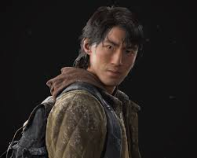
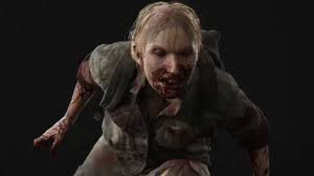
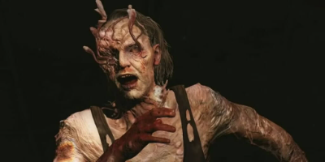
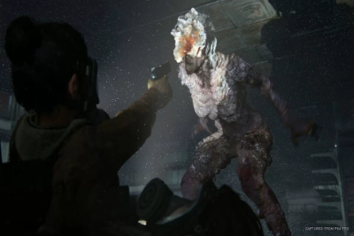
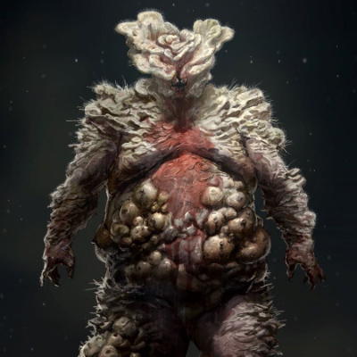

Como Tudo começou?
Joel, um sobrevivente solitário e que perdeu sua filha adolescente no início do apocalipse, recebe a missão de levar para fora de uma zona de quarentena uma menina de 14 anos, chamada Ellie. A jovem é a única humana conhecida que é imune ao fungo e se torna a esperança de uma cura. Mas, para isso, Joel precisa cruzar os Estados Unidos para chegar a um hospital onde essa cura poderá ser desenvolvida. Durante a jornada, ambos enfrentam diversos perigos, como as criaturas famintas e mercenários dispostos a atirar primeiro e perguntar depois. 'The Last of US Part 2' O sucesso do primeiro game foi tanto que ele ganhou uma continuação para PlayStation 4, em 2020. A sequência se passa cinco anos após o jogo original. Ambos protagonistas estão morando em um vilarejo em Wyoming e a ameaça dos infectados não os preocupa tanto. A vida que seguia pacata muda de uma hora para outra quando um grupo de sobreviventes se torna uma ameaça, e Ellie, agora adulta, sai em uma nova jornada em busca de justiça e vingança. No jogo, também conhecemos Abby, uma jovem musculosa e determinada que se vê envolvida em um conflito entre uma milícia e um culto. Ela acaba descobrindo que aqueles que considera amigos e inimigos, na verdade, são bem diferentes do que ela acreditava.
The last of us part 2
The Last of Us Part II se passa cinco anos após os acontecimentos do primeiro jogo. Joel e Ellie estão em um acampamento em Jackson, onde tentam levar uma vida normal. Nesse tempo, ela se envolve com Dina em um relacionamento que vai amadurecendo ao longo do jogo.Ao mesmo tempo, é com Joel que as coisas não vão nada bem… Mas tudo muda drasticamente quando ele, ao lado de seu irmão Tommy, some durante uma patrulha. Quando Ellie finalmente o encontra é tarde demais e, sem nenhuma chance de evitar o pior, o acontecimento desencadeia sua busca por vingança e respostas, mas também uma intensa crise de estresse pós-traumático. Ao longo do jogo são apresentados muitos flashbacks, que nos ajudam a entender as razões de Abby para o que fez e também os fatos que levaram ao desgaste da relação de Joel e Ellie. Além disso, a sua jornada é permeada por fragmentos sobre os Lobos da WLF (sigla para a Frente de Libertação de Washington, na versão em português), os Vaga-lumes (a entidade que estava à procura de uma cura para a infecção, no primeiro jogo) e os Serafitas ou Cicatrizes (o grupo de religiosos fanáticos que disputam Seattle com a WLF), que nos ajudam a compreender não apenas a história das protagonistas, mas este mundo caótico como um todo.
Principais personagens da saga:
1.Ellie
Uma das protagonistas do título, a narrativa do primeiro jogo gira em torno da segurança da garota de 14 anos. Joel recebe, sem muita animação, a missão de levá-la até os Vagalumes pois, segundo Marlene, ela é a chave para a cura do fungo que ameaça a humanidade.
2.Joel
Quando o surto do fungo cordyceps ocorreu, Joel levava uma vida normal e celebrava seu aniversário. De repente, tudo mudou na vida do outro personagem principal da trama. Com o tempo, Joel se distanciou de seu irmão Tommy, se juntou a Tess e virou um contrabandista.Após encontrar Marlene em uma resolução de negócios nada amigável, ele recebe a missão de escoltar Ellie até os Vagalumes.
3.Abby
Filha de um cirurgião assassinado por Joel, Abby faz parte dos Lobos, um grupo militar com base em Washington. Ao lado de Manny e seus outros companheiros, ela sai de Seattle rumo a Jackson em busca de vingança.Por mais que pareça uma antagonista para muitos, a interpretação do game coloca ela como uma das principais e mais marcantes personagens de The Last of Us mesmo que não tenha aparecido no início da narrativa.
4.Tommy

O irmão de Joel continua no comando da comunidade de Jackson, mas tem que colocar a mão na massa após Abby aparecer nos arredores da comunidade em busca por vingança pela morte de seu pai. Neste segundo game da série, o personagem é bem mais ativo.
5.Dina
Dina é a namorada de Ellie e companheira da protagonista durante a sua busca por respostas. O final do game deixa um questionamento sobre o estado da relação das duas.
6.Jesse
Jesse, o ex-namorado de Dina, após os acontecimentos em Jackson participa de parte da busca por vingança de Ellie em Seattle. Apesar de pouco tempo de tela, é muito importante em determinados momentos da história.
7.Tess
Tess é a primeira parceira interativa de Joel, que auxilia o personagem durante o gameplay. Sua participação na narrativa é de extrema importância pois ela participa de parte da “escolta” de Ellie.
Tipos de Infectados:
1.Corredores
Esse tipo de infectado é o que vimos após a transformação da vizinha de Sarah e Joel. Estes infectados são os mais frágeis, de modo que são facilmente eliminados com qualquer tipo de arma. Para chegar a este primeiro estágio, o vírus deve alcançar o cérebro humano - caso a mordida tenha sido na parte inferior do corpo, como acontece com Sam, a transformação pode demorar até dois dias. A esta altura, o infectado ainda tem quase todas as feições de um ser humano comum, apesar de algumas alterações na face que os aproximam da fisionomia de, bom, vampiros. Eles também são o tipo mais ágil de todos os infectados pela facilidade de movimento que possuem.
2.Perseguidores(stalkers)
Como o próprio nome diz, esse segundo estágio dos infectados é o que mais "persegue". No geral, o indivíduo neste nível de infecção foi contaminado há, no mínimo, duas semanas. Um pouco mais inteligentes e cautelosos do que os Corredores, os Perseguidores preferem se esconder atrás de locais escuros para conseguirem atacar de surpresa.Sobre a aparência física, estes infectados ainda se portam como humanos, mas sua aparência externa já está mais consumida pelo fungo - especialmente caso o vírus tenha se espalhado mais para a região da cabeça.
3.Estaladores (clickers)
Para se tornar um Estalador, o humano deve ter sido infectado há pelo menos um ano. Na série, Ellie comenta que estes infectados agem como "morcegos" por sua capacidade de se localizarem no escuro utilizando ondas sonoras. Por estarem infectados há muito tempo, os Estaladores tiveram sua cabeça totalmente transformada para se assemelhar a um grande cogumelo. Eles são considerados extremamente letais - é bom, portanto, evitar fazer qualquer ruído sonoro quando estiver em uma região onde possam estar.
4.Baiacus
A partir do quarto estágio de infecção, os seres humanos contaminados começam a ter seu corpo inteiramente tomado pela mutação do fungo Cordyceps. Como é possível ver na imagem acima, este nível faz com que o humano perca todas as suas características físicas e se assemelhe a uma espécie de monstro. Os Baiacus, porém, precisam estar confinados por uma certa quantidade de tempo em um local sem qualquer interfêrencia de luz para chegarem até esse estágio. É por isso que, na série, vemos o primeiro Baiacu saindo diretamente do chão de um prédio.
5.Trôpegos

Essa variação de infectados é muito semelhante ao quarto estágio, também necessitando de um certo tempo em locais fechados. Por ficarem muito tempo em locais com muita água - como esgotos -, eles se transformam em uma criatura inchada. A diferença deste estágio para os anteriores é que, apesar de sua cabeça estar totalmente transformada em um grande cogumelo, essas criaturas não são inteiramente cegas.
6.Rei dos Ratos

Introduzido apenas no segundo jogo da franquia, o Rei dos Ratos é o infectado mais aterrorizante dentre todos os apresentados pela Naughty Dog até então. Embora não seja possível classificá-lo como um sexto estágio por ser uma aparição única, ele certamente é a variação mais letal de todas. Essa variação se desenvolveu no hospital de Seattle após vinte anos de contaminação. O que sabemos é que o Rei dos Ratos se formou por meio de uma junção de diversos outros infectados, absorvendo sua força e tamanho até chegar a este estado.O Rei dos Ratos consegue aguentar dano de fogo, bombas e todas as armas de fogo. Mesmo que você tente derrubá-lo com muito dano, a criatura não morre ao invés disso, os diversos infectados que compõe seu corpo se desprendem e começam a te atacar para auxiliar o "Chefão". Caso essa criatura apareça na segunda temporada de The Last of Us, é bom prepararmos o psicológico para evitar pesadelos.